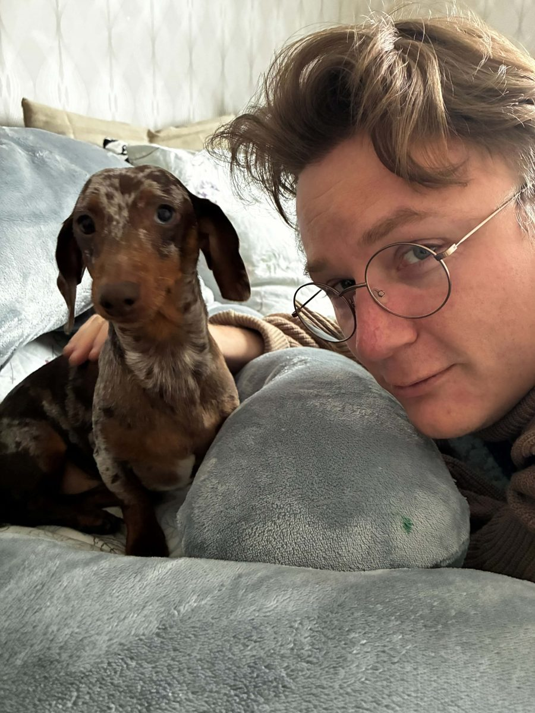

BAE Systems Hägglunds
2026–
Information Engineer. Documentation for computer systems and visual information systems in vetronics.
Martin Nygren structures technical information so that people can find, understand and trust it. He came to this work from a long career as a journalist and editor, and alongside it he writes fiction and essays in his own project, Verboten Media.

Martin works with information: how it is built, how its parts relate, and how it reaches the people who need it. He is an Information Engineer at BAE Systems Hägglunds. Before that he worked in technical information and user experience (UX), and before that, for many years, as a journalist and editor at Swedish national newspapers.
He is a generalist. What connects the work is a deep interest in information as a concept. He breaks a subject down into its parts, builds a structure that holds, and listens for where colleagues and readers actually get stuck. He applies the same habits to documentation and to editing.
He also writes fiction, essays, diagnostic fragments and publishing-world forms that treat institutions, interfaces and technical systems as dramatic material. In his words, a public page is there so a reader, editor or collaborator can understand who is responsible for the literary pressure behind the site.
Content fills a slot. Literature changes the pressure in the room.
The work is literary before it is explanatory: it wants rhythm, scene, compression, absurdity, and consequence.
Since September 2026 Martin has been an Information Engineer at BAE Systems Hägglunds. He writes documentation for computer systems and visual information systems in vetronics, the electronics and computer systems on board military vehicles.
The documentation follows two established standards. Simplified Technical English (STE) is a controlled form of English, with a limited vocabulary and clear writing rules, that keeps technical text unambiguous. S1000D is an international standard for building technical documentation out of reusable modules.
He works in a small team with a large contact surface and many stakeholders. His own way of working is docs-as-code: documentation is written, reviewed and version-controlled with the same tools and routines as software.
Alongside his job he is studying information and cybersecurity.
2026–
Information Engineer. Documentation for computer systems and visual information systems in vetronics.
Technical information and UX on an assignment for the European Central Bank (ECB).
Mar–May 2020
Internship in technical information and UX: knowledge base articles and the tree structure a chatbot navigated by.
Apr–Jun 2019
Content Designer, a full-time temporary position for three months. The work focused on print magazines, visual storytelling, presentations and CMS integration.
Journalism is Martin's foundation and his longest career. It taught him to find what matters, to write for a specific reader, and to deliver on deadline together with many others.
Journalist and editor. Among other things, he led printed sports supplements produced across several desks.
Journalism and editing.
Journalism and editing.
Journalism and editing.
2018–2019
Design Lead track.
2023–2024
Technical Information.
Ongoing studies.
2019–2021
Verboten – A technosocial novel, written in Swedish. It was co-written between 2019 and 2021 as an experiment in designing asynchronous workflows. Verboten Media's later writing emerges from it.
Verboten Media is the imprint where Martin publishes fiction and essays. It began with the novel Verboten – A technosocial novel, written in Swedish and co-written between 2019 and 2021 as an experiment in designing asynchronous workflows. Förlagsdeckaren, a later series of short prose, emerges from it. The imprint is always oscillating between active and inactive, like a server that is or isn't being pinged.
The imprint verbotenmedia.seMartin Nygren strukturerar teknisk information så att den går att hitta, förstå och lita på. Han kom till det arbetet från en lång bana som journalist och redaktör, och vid sidan av yrket skriver han fiktion och essäer i sitt eget projekt Verboten Media.
Information är det Martin arbetar med: hur den byggs upp, hur delarna hänger ihop och hur den når dem som behöver den. Han är i dag Information Engineer på BAE Systems Hägglunds. Dessförinnan arbetade han med teknisk information och användarupplevelse (UX), och före det i många år som journalist och redaktör på svenska rikstidningar.
Han är generalist. Det som binder ihop arbetet är ett djupt intresse för information som begrepp. Han tar isär ett ämne i dess beståndsdelar, bygger en struktur som håller och lyssnar efter var kollegor och läsare faktiskt fastnar. Samma vanor bär han med sig i dokumentationen och i redaktionsarbetet.
Han skriver också fiktion, essäer, diagnostiska fragment och former från förlagsvärlden, som behandlar institutioner, gränssnitt och tekniska system som dramatiskt material. Med hans egna ord finns en offentlig sida där för att en läsare, redaktör eller samarbetspartner ska kunna förstå vem som bär det litterära trycket bakom sajten.
Innehåll fyller en plats. Litteratur förändrar trycket i rummet.
Arbetet är litterärt före det är förklarande: det vill ha rytm, scen, kompression, absurditet och konsekvens.
Sedan september 2026 är Martin Information Engineer på BAE Systems Hägglunds. Han skriver dokumentation för datorsystem och visuella informationssystem inom vetronik, alltså elektroniken och datorsystemen ombord på militära fordon.
Dokumentationen följer två etablerade standarder. Simplified Technical English (STE) är en kontrollerad form av engelska, med begränsat ordförråd och tydliga skrivregler, som gör tekniska texter entydiga. S1000D är en internationell standard för att bygga teknisk dokumentation av återanvändbara moduler.
Han arbetar i en liten arbetsgrupp med stor kontaktyta och många intressenter. Hans eget arbetssätt är docs-as-code: dokumentationen skrivs, granskas och versionshanteras med samma verktyg och rutiner som programkod.
Parallellt läser han informations- och cybersäkerhet.
2026–
Information Engineer. Dokumentation för datorsystem och visuella informationssystem inom vetronik.
Teknisk information och UX i ett uppdrag för Europeiska centralbanken (ECB).
mars–maj 2020
Praktik inom teknisk information och UX: artiklar till en kunskapsbas och en trädstruktur som en chattbot navigerade efter.
apr–jun 2019
Content Designer, en visstidsanställning på heltid i tre månader. Arbetet handlade om tryckta magasin, visuellt berättande, presentationer och CMS-integration.
Journalistiken är Martins grund och hans längsta yrkesbana. Där lärde han sig att hitta det väsentliga, skriva för en bestämd läsare och leverera i tid tillsammans med många andra.
Journalist och redaktör. Ledde bland annat tryckta sportbilagor som gjordes tvärs över flera redaktioner.
Journalistik och redigering.
Journalistik och redigering.
Journalistik och redigering.
2018–2019
Design Lead.
2023–2024
Teknisk information.
Pågående studier.
2019–2021
Verboten – en teknosocial roman. Den skrevs tillsammans med en medförfattare 2019–2021, som ett experiment i att utforma asynkrona arbetsflöden. Ur boken växer Verboten Medias senare skrivande fram.
Verboten Media är förlaget där Martin ger ut fiktion och essäer. Det började med romanen Verboten – en teknosocial roman, som skrevs tillsammans med en medförfattare 2019–2021 som ett experiment i att utforma asynkrona arbetsflöden. Ur boken växer senare skrivande fram, bland annat den korta prosaserien Förlagsdeckaren. Förlaget pendlar alltid mellan aktivt och vilande, som en server som pingas eller inte.
Förlaget verbotenmedia.se